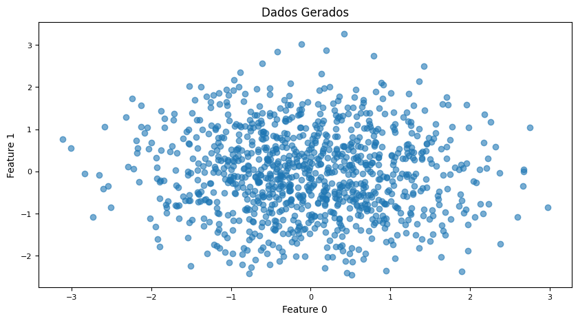
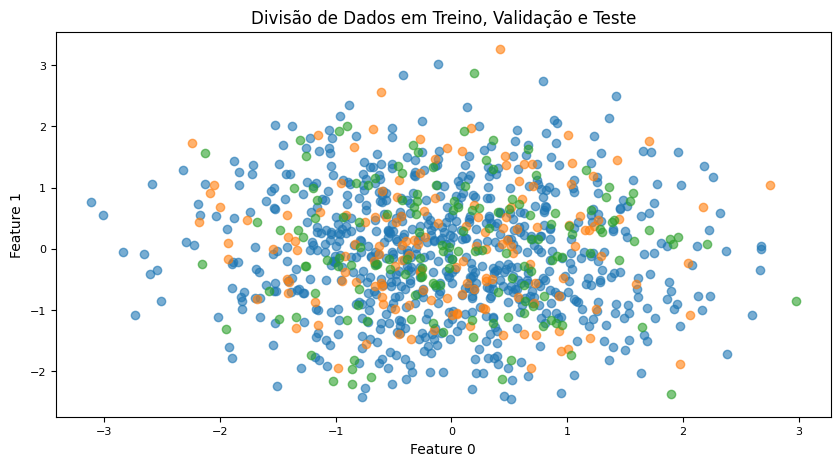
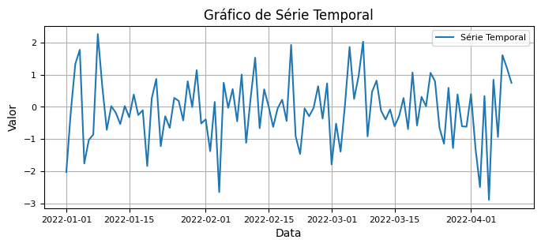
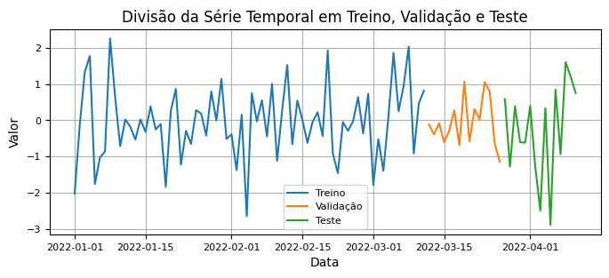
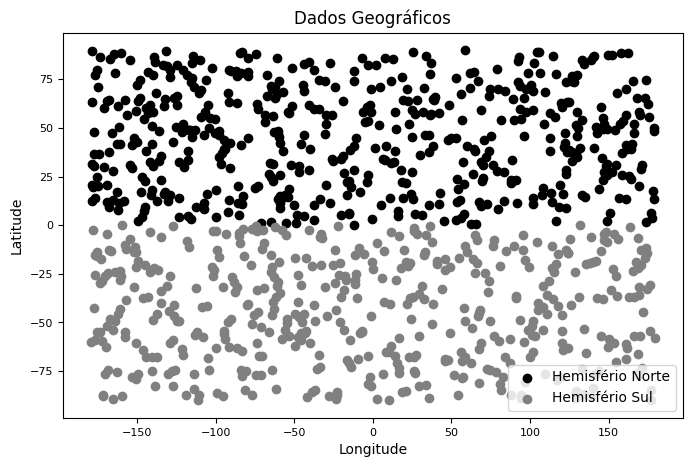
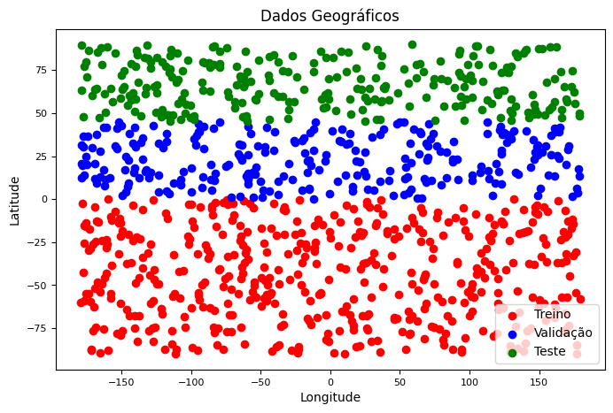

Separação de Dados: Treinamento, Validação e Teste
Na ciência de dados e no aprendizado de máquina, a separação dos dados em conjuntos de treinamento, validação e teste é uma prática essencial para garantir a generalização e a precisão dos modelos. Vamos detalhar cada um desses conjuntos:
Conjunto de Treinamento (Training Set)
O conjunto de treinamento é usado para ajustar os parâmetros do modelo. O modelo “aprende” a partir desses dados, identificando padrões e ajustando seus parâmetros para minimizar o erro.
Finalidade: Treinar o modelo.
Processo: Os dados são alimentados no algoritmo de aprendizado de máquina, que ajusta seus parâmetros para se adequar a esses dados.
Conjunto de Validação (Validation Set)
O conjunto de validação é usado para ajustar os hiperparâmetros do modelo e para a seleção do modelo. Este conjunto ajuda a evitar o overfitting, que ocorre quando o modelo se ajusta muito bem aos dados de treinamento, mas não se generaliza bem para novos dados.
Finalidade: Validar e ajustar hiperparâmetros do modelo.
Processo: Após o treinamento, o modelo é avaliado no conjunto de validação. Os hiperparâmetros são ajustados para melhorar o desempenho do modelo neste conjunto.
Conjunto de Teste (Test Set)
O conjunto de teste é usado para avaliar o desempenho final do modelo. Este conjunto nunca é usado durante o treinamento ou a validação do modelo e serve como uma medida objetiva da performance do modelo em dados não vistos.
Finalidade: Avaliar a performance final do modelo.
Processo: Após o modelo ser treinado e validado, ele é testado no conjunto de teste para obter uma estimativa realista de seu desempenho em dados novos.
Durante a separação dos dados, é importante entender que o tipo de problema influencia na forma como eles serão particionados, gerando assim diferentes tipos de separação, onde algumas delas serão tratadas a seguir.
Dados com Divisão Aleatória
A divisão dos dados é feita aleatoriamente para garantir a representatividade de toda a distribuição dos dados nos conjuntos de treino, validação e teste. É o tipo de divisão mais comúm, e é essencial para que o modelo possa aprender de forma eficaz e generalizar bem para novos dados.
Gerando dados aleatórios para exemplo
import pandas as pdimport numpy as npimport matplotlib.pyplot as plt# Número de amostrasn_samples =1000n_features =5# Número de características# Configurações de gerador aleatóriorng = np.random.default_rng(seed=0)# Gerar características aleatóriasX = rng.normal(loc=0, scale=1, size=(n_samples, n_features))# Gerar rótulos binários aleatóriosy = rng.integers(low=0, high=2, size=n_samples)# Criar DataFrame com dadosdata = pd.DataFrame(X, columns=[f'Feature_{i}'for i inrange(n_features)])data['Label'] = y# Plotar os dadosplt.figure(figsize=(10, 5))# Plotar dados de treinoplt.scatter(data['Feature_0'], data['Feature_1'], label='Treino', alpha=0.6)plt.title('Dados Gerados', fontsize=12)plt.xlabel('Feature 0', fontsize=10)plt.xticks(fontsize=8)plt.ylabel('Feature 1', fontsize=10)plt.yticks(fontsize=8)plt.show()

Aplicando divisão de dados: Treinamento, Validação e Teste
from sklearn.model_selection import train_test_split# Dividir os dados em treino, validação e testetrain_size =0.7validation_size =0.15test_size =0.15# Dividir dados em treino e restante (validação + teste)X_train, X_temp, y_train, y_temp = train_test_split(data.drop('Label', axis=1), data['Label'], train_size=train_size, random_state=0)# Dividir o restante em validação e testeX_validation, X_test, y_validation, y_test = train_test_split(X_temp, y_temp, test_size=0.5, random_state=0)# Opcional: salvar em novos DataFrames para uso posteriortrain_data = pd.concat([X_train, y_train.reset_index(drop=True)], axis=1)validation_data = pd.concat([X_validation, y_validation.reset_index(drop=True)], axis=1)test_data = pd.concat([X_test, y_test.reset_index(drop=True)], axis=1)# Plotar os dadosplt.figure(figsize=(10, 5))# Plotar dados de treinoplt.scatter(train_data['Feature_0'], train_data['Feature_1'], label='Treino', alpha=0.6)# Plotar dados de validaçãoplt.scatter(validation_data['Feature_0'], validation_data['Feature_1'], label='Validação', alpha=0.6)# Plotar dados de testeplt.scatter(test_data['Feature_0'], test_data['Feature_1'], label='Teste', alpha=0.6)plt.title('Divisão de Dados em Treino, Validação e Teste', fontsize=12)plt.xlabel('Feature 0', fontsize=10)plt.xticks(fontsize=8)plt.ylabel('Feature 1', fontsize=10)plt.yticks(fontsize=8)plt.show()

Dados Temporais (Time Series)
Para dados que possuem uma dimensão temporal, como séries financeiras ou dados climáticos, é importante respeitar a ordem cronológica. Normalmente, você seleciona os dados mais antigos para treinamento e os mais recentes para teste, para simular como o modelo se comportaria em previsões futuras.
Dados de série temporal para exemplo: Treinamento, Validação e Teste
# Definindo o período de tempodate_range = pd.date_range(start='2022-01-01', end='2022-04-10', freq='D')# Número de dias da série temporaldias =len(date_range)# Gerando valores aleatórios para série temporal com distribuição normalvalues = np.random.randn(dias) # Criando o DataFrametime_series = pd.DataFrame({'Date': date_range, 'Value': values})# Definindo a coluna 'Date' como índicetime_series.set_index('Date', inplace=True)# Plotando a série temporalplt.figure(figsize=(8, 3))plt.plot(time_series.index, time_series['Value'], label='Série Temporal')plt.title('Gráfico de Série Temporal', fontsize=12)plt.xlabel('Data', fontsize=10)plt.xticks(fontsize=8)plt.ylabel('Valor', fontsize=10)plt.yticks(fontsize=8)plt.legend(fontsize=8)plt.grid(True)plt.show()

Aplicando divisão de dados
# Dividindo os dados para 100 diastrain_data = time_series[:int(dias *0.7)] # 70% para treinamentovalidation_data = time_series[int(dias *0.7):int(dias *0.85)] # 15% para validaçãotest_data = time_series[int(dias *0.85):] # 15% para teste# Plotando os dadosplt.figure(figsize=(8, 3))# Plotando dados de treinoplt.plot(train_data.index, train_data['Value'], label='Treino')# Plotando dados de validaçãoplt.plot(validation_data.index, validation_data['Value'], label='Validação')# Plotando dados de testeplt.plot(test_data.index, test_data['Value'], label='Teste')plt.title('Divisão da Série Temporal em Treino, Validação e Teste', fontsize=12)plt.xlabel('Data', fontsize=10)plt.xticks(fontsize=8)plt.ylabel('Valor', fontsize=10)plt.yticks(fontsize=8)plt.legend(fontsize=8)plt.grid(True)plt.show()

Dados Geográficos ou Espaciais
Dados que contêm informação geográfica podem apresentar variações regionais. Uma divisão geográfica pode ser necessária, onde regiões diferentes são usadas para treino e teste para avaliar a capacidade do modelo de generalizar para novas localizações. É importante entender as características do que será predito para não cometer o erro de tornar aleatória a divisão dos dados, quando na verdade uma divisão mais especializada deveria ser feita.
Dados espaciais para exemplo: Treinamento, Validação e Teste
# Número de amostrasn_samples =1000# Configurações de gerador aleatóriorng = np.random.default_rng(seed=0)# Criar DataFrame com dados geográficosdata = pd.DataFrame({'Latitude': rng.uniform(low=-90, high=90, size=n_samples),'Longitude': rng.uniform(low=-180, high=180, size=n_samples),'Value': rng.normal(loc=0, scale=1, size=n_samples)}) # Valores associados às coordenadaslatitude_cutoff =0# Ponto de corte para dividir as regiões# Dados do hemisfério norte e sulnorth_data = data[data['Latitude'] >= latitude_cutoff]south_data = data[data['Latitude'] < latitude_cutoff]# Plotar os dadosplt.figure(figsize=(8, 5))# Plotar dados do hemisfério norteplt.scatter(north_data['Longitude'], north_data['Latitude'], color='black', label='Hemisfério Norte')# Plotar dados do hemisfério sulplt.scatter(south_data['Longitude'], south_data['Latitude'], color='grey', label='Hemisfério Sul')plt.title('Dados Geográficos', fontsize=12)plt.xlabel('Longitude', fontsize=10)plt.xticks(fontsize=8)plt.ylabel('Latitude', fontsize=10)plt.yticks(fontsize=8)plt.legend()plt.show()

Aplicando divisão de dados
# Dividir os dados com base na latitude em três regiões# 50% dos dados do sul para treinolatitude_cutoff1 =0# 25% dos dados norte para validaçãolatitude_cutoff2 =45# 25% dos dados do norte para teste# Dados de treino, validação e testetrain_data = data[data['Latitude'] < latitude_cutoff1]validation_data = data[(data['Latitude'] >= latitude_cutoff1) & (data['Latitude'] < latitude_cutoff2)]test_data = data[data['Latitude'] >= latitude_cutoff2]# Plotar os dadosplt.figure(figsize=(8, 5))# Plotar dados de treinoplt.scatter(train_data['Longitude'], train_data['Latitude'], color='red', label='Treino')# Plotar dados de validaçãoplt.scatter(validation_data['Longitude'], validation_data['Latitude'], color='blue', label='Validação')# Plotar dados de testeplt.scatter(test_data['Longitude'], test_data['Latitude'], color='green', label='Teste')plt.title('Dados Geográficos', fontsize=12)plt.xlabel('Longitude', fontsize=10)plt.xticks(fontsize=8)plt.ylabel('Latitude', fontsize=10)plt.yticks(fontsize=8)plt.legend()plt.show()

Outros tipos de divisão de dados
Dados de Usuários ou Pacientes:
Em estudos onde cada ponto de dados está associado a um usuário ou paciente, é importante garantir que dados de um mesmo usuário ou paciente não estejam presentes nos conjuntos de treino e teste. Isso é conhecido como divisão por identificador único.
Dados de Imagens ou Texto com Contexto:
Em tarefas onde o contexto é importante, como análise de sentimentos em textos ou reconhecimento de objetos em imagens, é necessário garantir que o contexto seja representado em ambos os conjuntos de dados. Por exemplo, não colocar todos os dados de um determinado assunto apenas no conjunto de teste.
Dados com Distribuição Desbalanceada:
Quando há uma distribuição desigual entre as classes, é essencial manter a mesma proporção de classes em todos os conjuntos de dados para que o modelo seja treinado e testado de maneira consistente.
Dados com Relações Causais:
Em cenários onde há uma relação causal entre variáveis, é importante considerar essa relação ao dividir os dados. Por exemplo, em dados de saúde, onde a intervenção médica pode afetar o resultado, é preciso garantir que a intervenção não vaze do conjunto de treino para o de teste.
Existem outros inúmeros tipos de dados que necessitam de outras divisões para predição diferente do que se é mais comúm ou usual. Por isso é importante sempre entender de que tipo de dado se está ligando, para que a predição não seja comprometida.